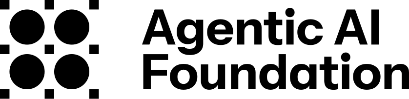

People met in person
Seven launch events brought maintainers, platform teams, and developers together.

As of Aug 4, 2026MCP specification · 2026-07-28
The July 28 release was the largest MCP update yet. Seven events brought together more than 475 people. About 100 ambassadors committed to guides, talks, videos, and workshops.
How the campaign worked
Results from launch week
AAIF hosted events. Ambassadors published practical guidance. The wider community shared the release.
Each figure uses its own reporting period, so we show the totals separately. Read the campaign recap ↗
How it worked
Seven launch events brought maintainers, platform teams, and developers together.
Guides and demos showed teams how to migrate, add authorization, and run MCP in production.
Ambassadors, companies, reporters, and independent writers reached people beyond AAIF's channels.
Seven events · six cities
Eleven organizations helped host events across North America and Europe. Sessions focused on how teams can use the new specification in production.
Independent coverage
A community tracker logged 40 independent posts from Monday evening through Thursday midday. These posts were separate from AAIF's campaign.
AAIF and ambassador posts
| Channel | Posts | Impressions | Engagements | Role |
|---|
LinkedIn reached enterprise and platform teams. X carried the most posts. Bluesky kept its smaller community informed and does not report impressions.
Posts behind the numbers
Read the posts, migration guides, event notes, and coverage included in this recap.